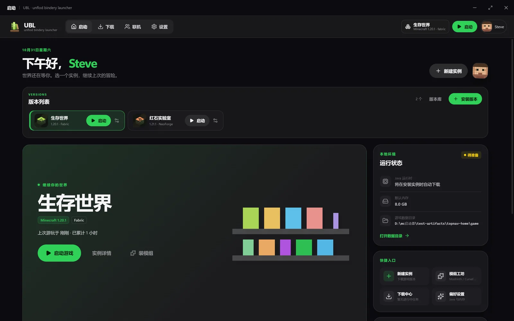
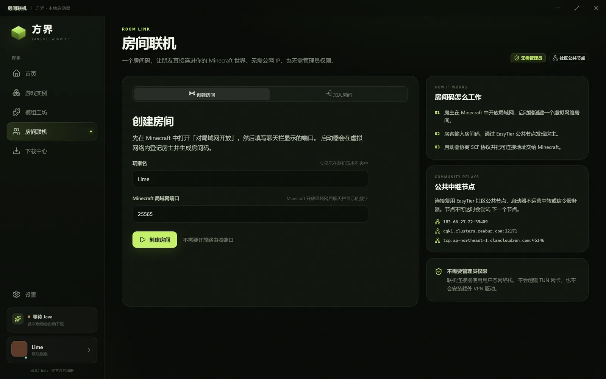
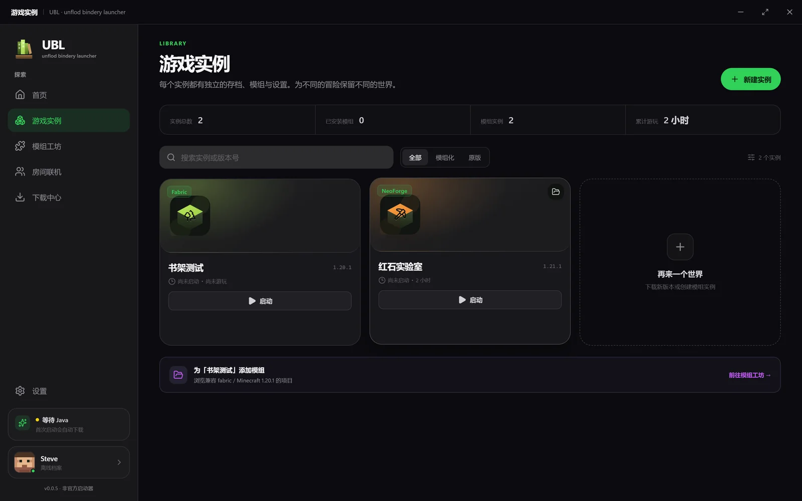
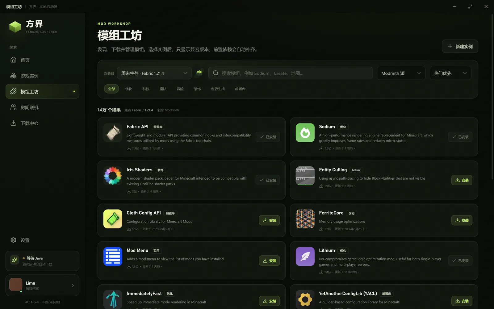
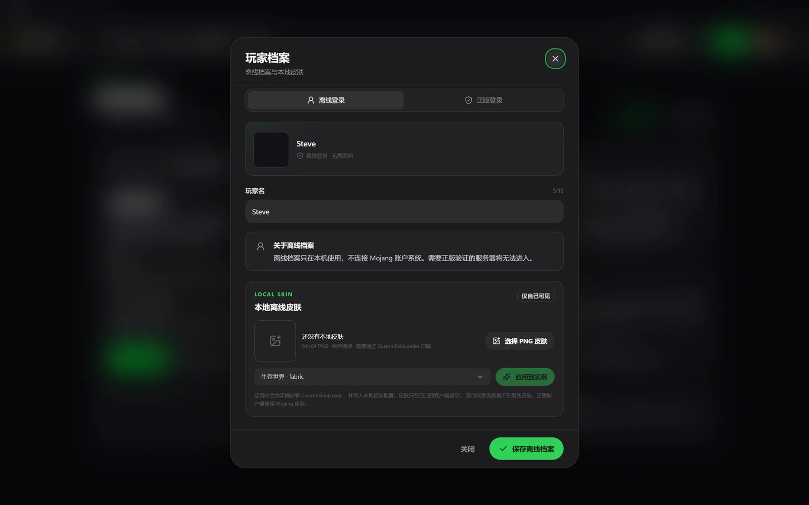

ROOM LINK
房间码联机，不走浏览器
房主开房得到 U/XXXX-XXXX-XXXX-XXXX，朋友输入房间码即可加入。
EasyTier 以 Rust 库内嵌，复用社区公共节点，不要求安装 VPN 或开放路由器端口。
无需管理员
no-tun / smoltcp
公共中继
MINECRAFT LAUNCHER · 0.0.2-ALPHA
方界是一款轻量的 Windows Minecraft 启动器。五加载器、双模组源、正版登录、本地皮肤， 以及不需要公网 IP 和 VPN 软件的房间联机。

CORE FEATURES
把实例、加载器、模组和联机放进一个桌面应用，不要求你成为系统管理员。
ROOM LINK
房主开房得到 U/XXXX-XXXX-XXXX-XXXX，朋友输入房间码即可加入。
EasyTier 以 Rust 库内嵌，复用社区公共节点，不要求安装 VPN 或开放路由器端口。
LOADERS
原版、Fabric、Quilt、Forge、NeoForge。创建实例时选择，运行库与 Java 自动准备。
MODS
Modrinth 与 CurseForge 搜索、版本过滤、前置自动补齐，安装后可直接启动。
ACCOUNT
官方登录窗口完成 Xbox Live 与 Minecraft 验证，令牌以 Electron safeStorage 加密保存在本机。
SKIN
上传 64×64 PNG，自动安装 CustomSkinLoader 并写入本地皮肤配置；只在自己的客户端显示。
INSTANCES
存档、模组、配置、日志互不干扰；实例详情、模组启停、下载中心与启动日志集中管理。

ROOM LINK · 0.0.2-ALPHA
房主在 Minecraft 中开放局域网，把聊天栏端口填进方界；房客输入房间码， 得到的地址可以直接粘贴到「多人游戏 → 直接连接」。
生成房间码，启动器在虚拟网络内登记房主。
连接器通过 EasyTier 社区公共节点发现房主。
SCF 协商端口，端口转发把地址交给 Minecraft。
THE DESKTOP
深色、紧凑、没有多余弹窗。下面是真实的桌面截图。



NEXT ON THE BENCH
面向 Tauri v2 的 Rust 核心已经包含崩溃模式映射、JAR 依赖扫描、diff 预览与可回滚修复。 它尚未接入当前 Electron UI，接入正在进行；不把“已完成核心”说成“已上线功能”。
整合包、资源包/光影、OptiFine、插件与离线模式
10 类模式、JAR 扫描、diff 与回滚已通过 Rust 测试
实例复制、模板元数据、勾选式启停已可用
CSV 采样、版本与权限声明已定义
DOWNLOAD · 0.0.2-ALPHA
Windows 10/11 x64。安装版按当前用户安装，不请求管理员权限；卸载不会删除游戏存档。
fbe58c6f073b137efb119c77233dea3037457c6640197bb18f4ba66492130a47
BEFORE YOU ASK
这个版本还很小，先把边界说清楚。
不需要。房间联机复用 EasyTier 社区公共节点，不需要自建中转/信令服务器，也不需要安装第三方 VPN；连接器不创建 TUN 网卡，不要求管理员权限。
通常是一个 127.0.0.1:端口 地址，直接粘贴到 Minecraft 的「多人游戏 → 直接连接」。控制面、端口转发和同机 TCP 回显已验证；真实跨机器 NAT 仍建议实测。
支持 Microsoft 账号 OAuth 登录。真实账号的完整在线启动仍建议使用自己的账号验证；登录窗口与取消流程已通过测试。
不能。本地皮肤只在自己的客户端显示，依赖 CustomSkinLoader，目前仅支持经典模型。
0.0.2-alpha 尚未做代码签名，Windows SmartScreen 可能提示未知发布者。校验 SHA256 后再运行。
0.0.2-alpha 已接入整合包、资源包/光影、OptiFine 无窗口安装、自动更新器与崩溃诊断 UI；真实签名更新、跨机器 NAT 与 P2P RTT 仍是边界。